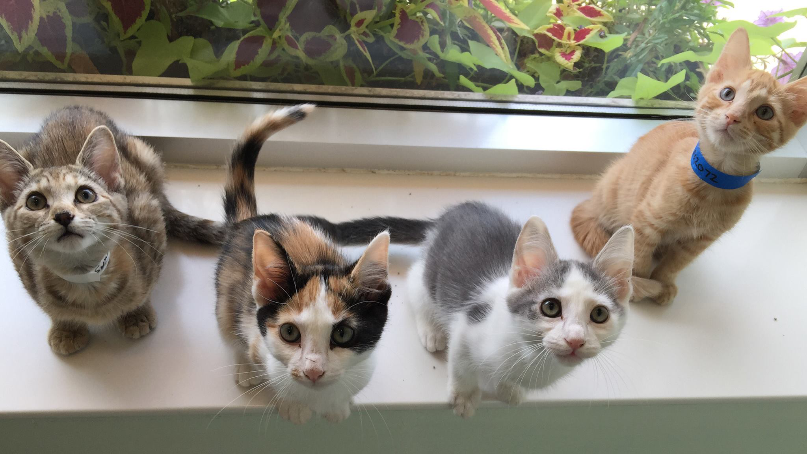

Cora Hays-Magan

Enumberables with Kittens
It's a long word for picking up kittens.
August 21, 2015
Enumerables loop through a collection (like an array or hash) one by one.
Think of it in terms of a litter of kittens:
- Each kitten will be held
- Each kitten will be petted.
- Until the kitten bites or scratches you, they can play with your hands.
- Each kitten is put into a new box together.
To enumerate is to pick up each kitten one by one
The base of Enumerators is built on `each` and methods use the idea of each loop through a collection in slightly different ways. Be careful! Just like the cute kitten biting your finger, enumerators that look one way can act a bit differently. If an array is a kitten, a hash is an adult cat. Playing with one is not like playing with the other. Methods with the same name can vary between their use on arrays and hashes.
One enumerable method is called map.
Map acts like each but returns differently. The map returns the array or hash for use, each discards it...or so The Well-Rounded Rubyist says...
I tried and tried and couldn't get an example to see the effect of identical methods using each and map where the value returned was saved or discarded. I think this comes to play in more complicated issues, so keep this in mind in 6 months when you're staring at a block of code and swearing. This tidbit might stop the swearing and start a high-five.
Then what's the difference? I found each can't take a bang(!) and map can.
list = ([1, 2, 3]) def method_each(list) list.each {|x| x * 3} end
def method_map!(list) list.map! {|x| x * 3} end
The return for method_each is [1,2,3] but method_map! changes list to [3,6,9]. So map can destruct the object and each can't, but kittens are always cute.